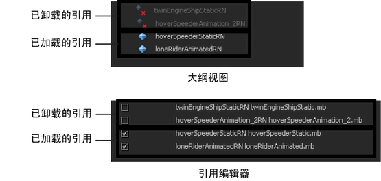

本节中包含与文件引用相关的基础概念、术语和操作的一般概述。
打开的父场景引用子场景后，该子场景的内容将放置在内存中并显示在场景中。被引用文件的这种初始状态称为已加载。可以同时在打开的父场景中加载其他子场景。如果被引用场景已卸载，则引用的子场景和父场景之间的连接将暂停，并在内存中不再加载被引用场景文件的内容。您可以从打开的父场景文件内加载、卸载或重新加载引用的子场景。
您可以从大纲视图(Outliner)或引用编辑器(Reference Editor)加载和卸载引用。请参见加载和卸载文件引用。
您可以对打开的父场景中的引用对象应用编辑，而无需修改引用的原始子场景。在父场景中工作时对引用的对象应用的所有编辑都存储在一个名为引用节点的节点中。在父场景中引用子场景时，将为每个子场景创建一个引用节点。引用节点可以跟踪父场景使用和修改子场景所包含的对象的方式。您可以选择是将对引用所做的编辑隔离在父场景内，还是将编辑应用于引用的源文件。
请参见引用编辑。
父场景可以引用其他父场景，以创建嵌套引用层次。父场景可以根据其在文件引用层次中的相对位置，引用其他文件，也作为另一父场景的被引用子场景。发生这种情况时，子场景文件称为孙场景文件。由父场景、子场景及其他孙场景文件组成的这一层次引用称为多级引用。
多级引用的层次是对大型场景中显示复杂性的多个组件和层级进行分段的一种方法。请参见文件层次集合。
被引用文件无法引用其父场景或位于其上方引用层次中的任何其他文件。
当引用场景中的节点被设置为被引用节点的子对象时会创建养父。例如，如果引用几何体，然后在其下设置父对象，那么当卸载引用时会创建养父节点。
养父节点可确保在重新加载引用时可以正确重新应用父子关系。由于文件与已卸载的引用一起保存，因此导出和保存操作会自动生成养父节点。
要导出不具有养父节点的文件，您可以在导出时禁用“保留引用”(Preserve References)。但是，这样做会将所有被引用的节点烘焙到已导出的场景文件中。请参见导出文件引用。
养父节点仅在卸载引用期间存在，重新加载引用后这些节点便不再存在。